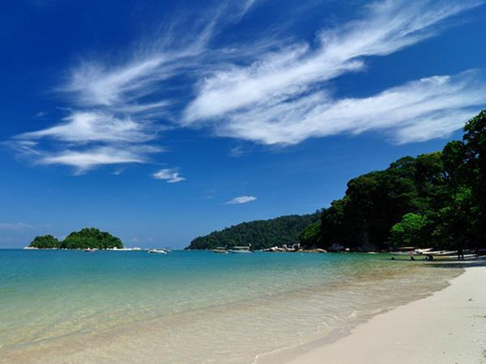

Pangkor Island, Perak

Pangkor Island is a relaxing tropical vacation destination in Perak, Malaysia, famous for its pristine beaches like Pasir Bogak and Teluk Nipah, as well as snorkeling, kayaking, and visiting historic sites like Dutch Fort. Pangkor Island is an ideal holiday destination for those looking for a relaxing and less crowded island holiday. Pangkor Island also has many places to offer bird watchers because there are a large number of very interesting species such as hornbills or the so-called Hornbills that arrive on the island. Although the beach is the main attraction of Pangkor Island, there are many other interesting places here as well. Pangkor Island can be accessed either by water or road. Pangkor Island is situated off Malaysia's west coast and experiences hot and humid weather all year round. The rainy season runs from April - October, and the dry season is from October - April.